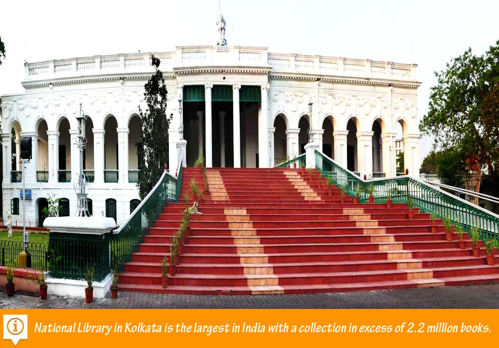

|  |
About Kolkata National LibraryThe Kolkata National Library is the largest library in India and the first public library in the country. It is located in Kolkata, West Bengal, and was established in 1836. The library has a vast collection of books, manuscripts, journals, and other materials in various languages including English, Bengali, Hindi, and Urdu.The library was originally called the Imperial Library and was set up by the British government to collect, preserve, and distribute books and other reading material to the general public. After India gained independence in 1947, the library was renamed as the National Library and its collections were expanded to include works from all parts of India. The library is spread over an area of about 30 acres and has more than 2.2 million books, 86,000 manuscripts, and 2,500 rare and valuable books. It also has a large collection of microfilms, microfiche, and electronic resources. The library has a reading room that can accommodate up to 550 people at a time and is open to the public from Monday to Saturday. |
Crafted with ❤ by MSIT